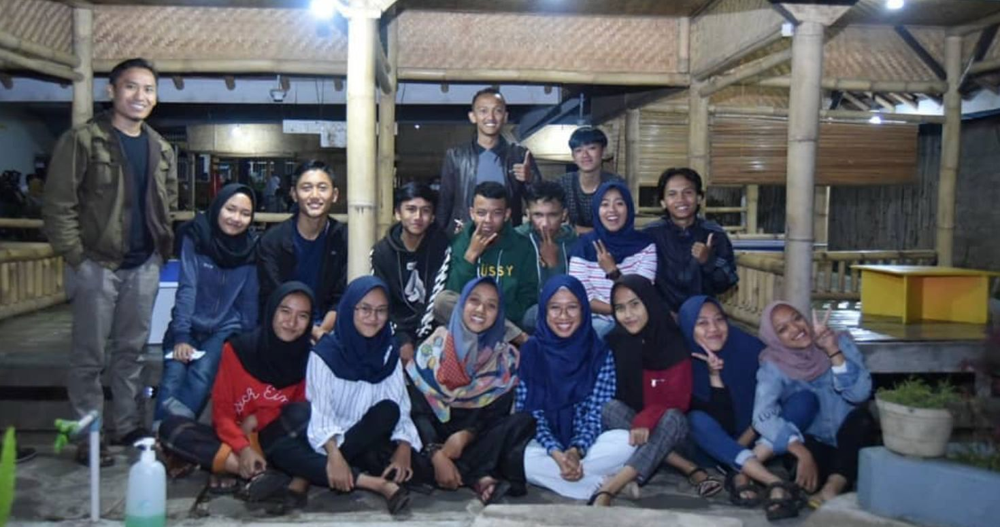

Buka Bersama Pemuda Pemudi SABANUSA
Deskripsi Kegiatan
Ada momen-momen yang tidak bisa diukur dengan angka — salah satunya adalah kehangatan berbuka puasa bersama orang-orang yang kita sayangi. Pada 2 Juni 2019, SABANUSA menggelar tradisi bukber tahunan dengan tema "Ramadan Bersama Keluarga Besar SABANUSA" — sebuah malam yang penuh tawa, haru, doa, dan kenangan yang tak terlupakan bagi lebih dari 120 anggota yang hadir.
Cerita Lengkap
Sore itu, langit Cikalong mulai memerah ketika para anggota SABANUSA satu per satu berdatangan ke lokasi acara. Aroma kolak pisang dan es buah segar menyambut siapapun yang melewati pintu masuk. Dekorasi sederhana namun hangat — lampu kelap-kelip, spanduk bertuliskan "Selamat Datang, Keluarga Besar SABANUSA" — memberi kesan bahwa malam ini bukan sekadar acara formalitas, melainkan reuni jiwa-jiwa yang satu tekad.
Acara dibuka dengan kultum singkat yang dibawakan oleh salah satu senior SABANUSA. Ia berbicara tentang makna Ramadan bagi sebuah komunitas: bahwa bukan hanya perut yang dilatih berpuasa, tetapi juga ego, kesombongan, dan jarak antar sesama. "Di sini tidak ada yang senior atau junior," katanya. "Yang ada hanya satu — kita adalah keluarga." Tepuk tangan hangat mengisi ruangan.
🌙 Rangkaian Acara Malam Itu
- Kultum Ramadan oleh senior SABANUSA
- Buka puasa bersama dengan menu takjil lengkap
- Salat Maghrib berjamaah
- Makan malam bersama — nasi kotak + lauk tradisional
- Sesi sharing "Cerita Puasa Pertama" yang mengharukan
- Penampilan akustik live oleh anggota SABANUSA
- Doorprize dan games ringan
- Salat Isya dan Tarawih berjamaah
Saat azan Maghrib berkumandang, suasana menjadi begitu syahdu. Ratusan tangan meraih gelas es buah masing-masing, dan dalam hitungan detik — setelah doa bersama — tawa dan obrolan langsung memenuhi ruangan. Ada yang berbagi kurma, ada yang rebutan kolak, ada yang langsung menyantap gorengan hangat. Itulah momen paling jujur: saat puasa batal dan kebersamaan dimulai.
Sesi paling mengharukan malam itu adalah "Cerita Puasa Pertama" — sebuah segmen di mana beberapa anggota diminta berbagi kisah puasa pertama mereka semasa kecil. Tawa berderai ketika seorang anggota menceritakan betapa dulu ia diam-diam minum air saat orang tua tidak melihat. Namun suasana berbalik haru ketika seorang anggota lain bercerita bahwa ia belajar puasa pertama kali dari ibunya yang kini telah tiada — dan Ramadan selalu membawa rindu yang tidak pernah hilang. Beberapa mata terlihat berkaca-kaca. Beberapa tangan saling menggenggam.
Penampilan akustik live oleh anggota-anggota berbakat SABANUSA mengangkat kembali suasana. Lagu-lagu Ramadan mengalun merdu, diselingi lagu-lagu pop yang membuat semua orang ikut berdendang. Doorprize yang dibagikan mengundang tawa — terutama saat beberapa orang mendapat hadiah konyol yang sudah disiapkan panitia dengan penuh humor.
Malam itu ditutup dengan salat Isya dan Tarawih berjamaah. Dalam saf-saf yang rapi, para pemuda-pemudi SABANUSA berdiri bahu membahu — sebagaimana mereka selalu berdiri bersama dalam setiap kegiatan, dalam setiap suka dan duka. Ada yang menangis dalam doa. Ada yang tersenyum dalam sujud. Semua melebur menjadi satu rasa: syukur.
Bukber 2019 bukan hanya tentang makanan atau hiburan. Ia adalah bukti bahwa SABANUSA bukan sekadar organisasi kepemudaan biasa — ia adalah rumah. Rumah yang selalu hangat, selalu terbuka, dan selalu siap menerima siapapun yang membutuhkan tempat untuk pulang. Dan malam itu, 120 orang pulang ke rumah yang sama — dengan hati yang penuh dan kenangan yang akan diingat jauh melampaui Ramadan itu sendiri.